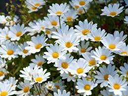
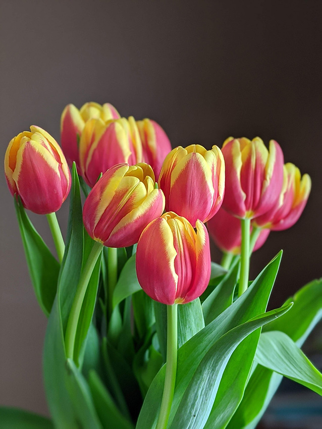
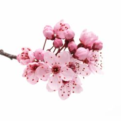
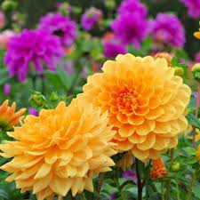

GIRASOLES

Son reconocidos como el símbolo del sol y simbolizan el amor y la admiración. También se cree que son símbolos de la felicidad, la vitalidad, el positivismo y la energía.
MARGARITAS
Las margaritas son el símbolo de la pureza, la inocencia, la amistad incondicional y el amor puro desligado de aquellas connotaciones que apunten hacia pasiones o romances entre personas.
TULIPANES
El tulipán es un símbolo de amor sincero. Su significado varía en los tonos de color de éste.
FLORES DE CEREZO
Estas pálidas y frágiles flores son algo más que el símbolo de la primavera. Guardan profundos significados en Japón, pues allí representan lo efímero de la vida y también son el símbolo de los guerreros samurai.
DALIAS
En algunas culturas las flor representa los impulsos. La reconocerás por sus forma y sus colores como: rojos, rosas, amarillos, anaranjados, púrpuras o combinaciones de otros colores.
BOCAS DE DRAGÓN

Las bocas de dragón se utilizan a veces como amuleto contra la falsedad. También pueden representar la idea de la gracia bajo presión o en la fuerza interna necesaria para superar situaciones difíciles.
Las Flores Peligrosas